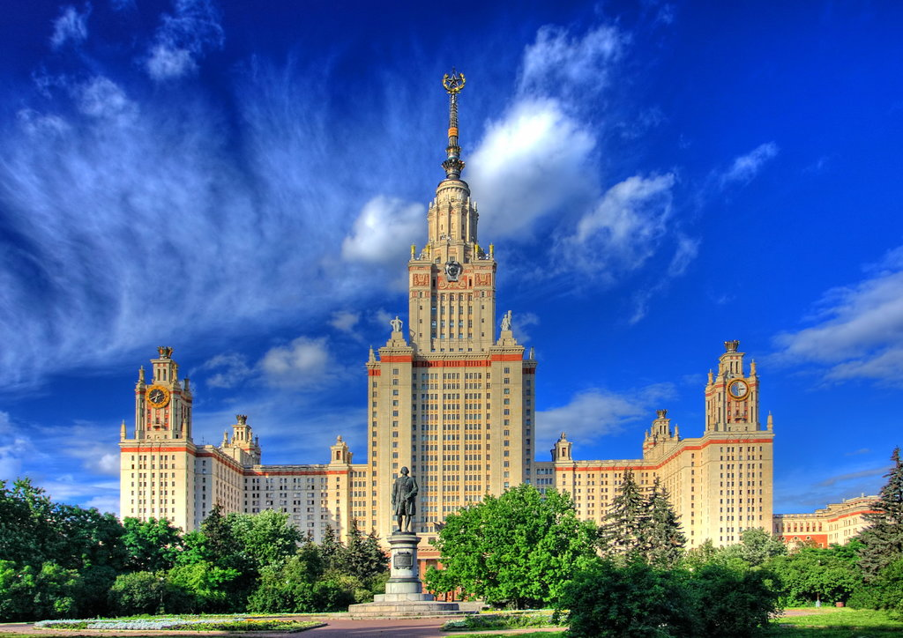
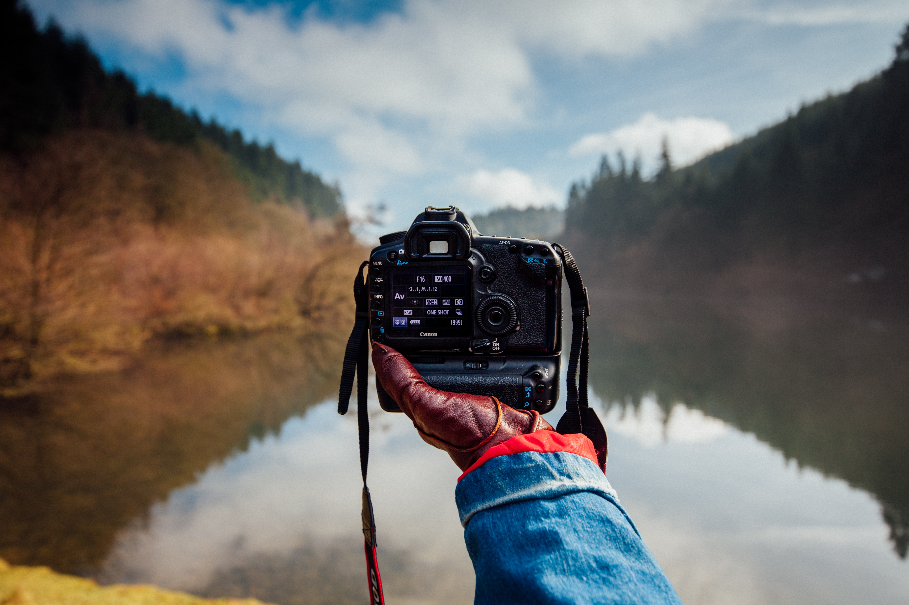

Ярослав Николаев
Frontend-developer
Привет всем посетителям этой страницы!☺
Давайте знакомиться, меня зовут Николаев Ярослав, родился и вырос в г. Москве, на данный момент мне 26 лет, много где работал, в основном, на работах не по специальности. Решил полностью поменять свою жизнь и пойти учиться именно осознанно тому, чего я хочу, надеюсь, что у меня все получится!
Образование:
Я имею два образования со степенями:
- Бакалавр
- Обучался с 2012-2016 гг. в МГУПИ по направлению Оптотехника
- Магистр
- Обучался с 2016-2018 гг. в МИРЭА по направлению Оптотехника

Опыт работы:
Опыта работы на данной момент у меня нет, но еще все впереди.
Хобби:
На самом деле я очень разносторонний человек и поэтому много всего нравится, но из основоного, пожалуй, это вот:
- Катаюсь на сноуборде
- Занимаюсь воркаутом
- Катаюсь на велосипеде
- Играю в игры, как правило, компьютерные
- Читаю книги
- Смотрю фильмы и сериалы
- Слушаю музыку

Как я становился разработчиком:
- Задумался о том, что надо что-то менять
- Начал думать, что будет еще долго пользоваться спросом
- Вспомнил про IT-специальности
- Начал мониторить курсы
- Выбрал курс по Frontend ′у от Skillfactory